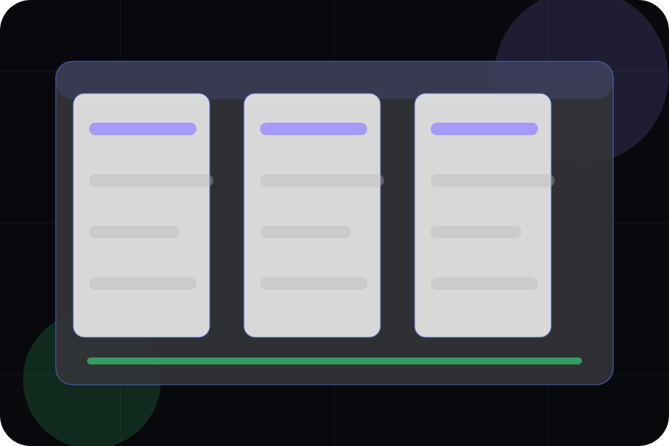
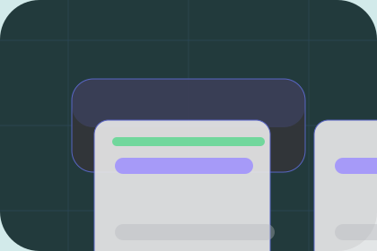

Best Fit
Who should use overview and when it belongs in the product journey.
Product / 01
Product opens as a clear software decision hub: what Orbit offers, who it helps, why it matters, and which route to take first.
The first screen combines positioning, proof, primary action, and fast internal navigation, so people can act immediately or compare the rest of the product route with context.
App interface hero
Select the closest route and Orbit keeps the next step, proof, and follow-up expectation aligned with speed, clarity, and product confidence.

Product / 02
Overview explains the practical scope, best-fit situations, and expected outcome so software visitors can compare options without decoding jargon.
The section keeps the offer concrete: what is included, who it is best for, what decision it supports, and which linked route gives the deeper detail.
Explore ProductWho should use overview and when it belongs in the product journey.
The practical benefit visitors should expect after choosing this route.
Where to compare details, pricing, support, or contact options before committing.
Product / 03
Modules explains the practical scope, best-fit situations, and expected outcome so software visitors can compare options without decoding jargon.
The section keeps the offer concrete: what is included, who it is best for, what decision it supports, and which linked route gives the deeper detail.
Explore ProductWho should use modules and when it belongs in the product journey.
The practical benefit visitors should expect after choosing this route.
Where to compare details, pricing, support, or contact options before committing.
Product / 04
Screens explains the practical scope, best-fit situations, and expected outcome so software visitors can compare options without decoding jargon.
The section keeps the offer concrete: what is included, who it is best for, what decision it supports, and which linked route gives the deeper detail.
Explore ProductWho should use screens and when it belongs in the product journey.
The practical benefit visitors should expect after choosing this route.
Where to compare details, pricing, support, or contact options before committing.
Product / 05
Workflows explains the practical scope, best-fit situations, and expected outcome so software visitors can compare options without decoding jargon.
The section keeps the offer concrete: what is included, who it is best for, what decision it supports, and which linked route gives the deeper detail.
Explore ProductWho should use workflows and when it belongs in the product journey.
The practical benefit visitors should expect after choosing this route.
Where to compare details, pricing, support, or contact options before committing.
Product / 06
Roles explains the practical scope, best-fit situations, and expected outcome so software visitors can compare options without decoding jargon.
The section keeps the offer concrete: what is included, who it is best for, what decision it supports, and which linked route gives the deeper detail.
Explore ProductOrbit structures roles around best fit, what changes, and a clear next route so visitors can compare the block quickly before they schedule a demo.
Schedule DemoProduct / 07
Integrations explains the practical scope, best-fit situations, and expected outcome so software visitors can compare options without decoding jargon.
The section keeps the offer concrete: what is included, who it is best for, what decision it supports, and which linked route gives the deeper detail.
Explore ProductWho should use integrations and when it belongs in the product journey.
The practical benefit visitors should expect after choosing this route.
Where to compare details, pricing, support, or contact options before committing.
Product / 08
Benefits defines the better state Orbit is built to create, with enough detail to make the promise believable.
A product-led SaaS site with a dark dashboard hero, precise modules, issue-like cards, and calm product copy. The section grounds that direction in concrete benefits, visible tradeoffs, and a next route visitors can use when the promise feels relevant.
Explore ProductBenefits defines what becomes clearer, easier, or safer when Orbit is the chosen route.
Product / 09
Difference explains the practical scope, best-fit situations, and expected outcome so software visitors can compare options without decoding jargon.
The section keeps the offer concrete: what is included, who it is best for, what decision it supports, and which linked route gives the deeper detail.
Explore ProductWho should use difference and when it belongs in the product journey.
The practical benefit visitors should expect after choosing this route.
Where to compare details, pricing, support, or contact options before committing.
Product / 10
Orbit closes the product route with a clear action, a quick reminder of the value, and a low-friction way to schedule a demo.
Visitors who are ready can use the primary action. Visitors who are still comparing can scan the section links, proof, and support routes before they schedule a demo.
Schedule DemoThe final block keeps the choice simple: act now, compare one more proof route, or send enough detail for a focused response.
Schedule Demospeed, clarity, and product confidence
A product-led SaaS site with a dark dashboard hero, precise modules, issue-like cards, and calm product copy. Product ends with a direct path to schedule a demo, plus enough context for visitors who still need to compare.

Schedule DemoInformation is provided for planning and should be reviewed for the final client, location, and operating rules.